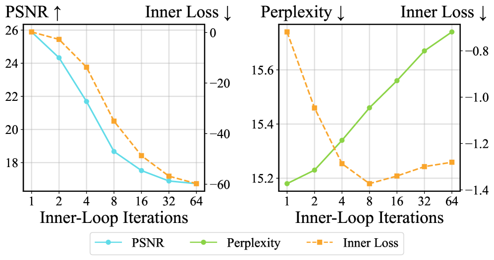
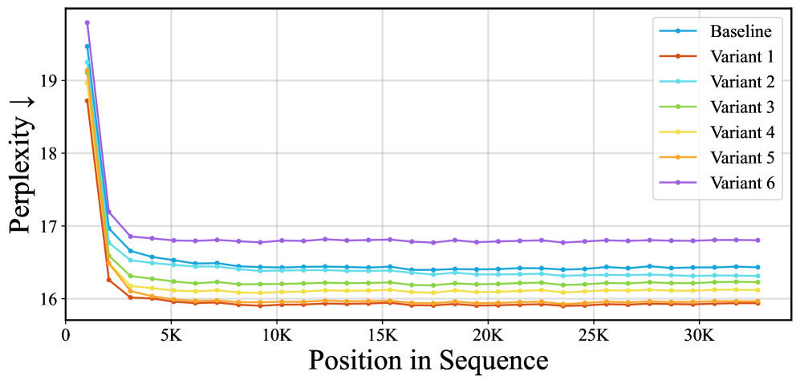

Why it matters왜 중요한가
The dominant intuition behind TTT — "better inner-loop fitting = stronger memory = better task" — is simply false.
TTT를 떠받치는 지배적 직관 — "내부 루프를 더 잘 맞출수록 더 강한 기억, 더 좋은 성능" — 은 그냥 틀렸다.
TTT-KVB has graduated from an adaptation trick into an architectural primitive — a sub-quadratic rival to softmax attention. But the memorization story has quietly driven a lot of complexity: deep inner MLPs, fancy optimizers, normalization, all justified as improving "memorization fidelity." The authors surface four behaviors that contradict memorization: queries and keys live in different distributions, swapping queries for keys barely changes anything, more inner-loop steps lower the inner loss yet hurt the task, and replacing gradient descent with gradient ascent works just as well. They then prove why: a TTT layer with a linear final inner-layer is, exactly, a learned linear attention operator — so the inner loop isn't storing memories, it's parameterizing a history-dependent mixing of Q, K, V.
TTT-KVB는 적응 기법을 넘어 아키텍처 기본 단위 — softmax 어텐션의 준이차(sub-quadratic) 대안 — 으로 격상되었다. 그러나 암기 서사는 조용히 많은 복잡성을 정당화해왔다. 깊은 내부 MLP, 화려한 옵티마이저, 정규화 모두 "암기 충실도" 향상이라는 명목으로. 저자들은 암기설과 모순되는 네 가지 현상을 드러낸다. query와 key가 서로 다른 분포에 있고, query를 key로 바꿔도 성능이 거의 변하지 않으며, 내부 루프 스텝을 늘리면 내부 손실은 줄지만 과제 성능은 나빠지고, 경사하강을 경사상승으로 바꿔도 똑같이 잘 작동한다. 이어 그 이유를 증명한다. 마지막 내부 층이 선형인 TTT 레이어는 정확히 학습된 선형 어텐션 연산자이며, 따라서 내부 루프는 기억을 저장하는 게 아니라 Q·K·V의 이력 의존적 혼합을 매개변수화할 뿐이다.

By the numbers핵심 숫자
throughput (parallel form)TTT 레이어 추론
처리량 (병렬화)
training speedup학습 종단간
가속
to linear attn (16.43→16.80)선형 어텐션 완전 환원의
PPL 손실 (16.43→16.80)
(NVS, 25.94→25.73)완전 환원의 PSNR 손실
(NVS, 25.94→25.73)
(LLM · NVS · ViT cls)통합한 과제
(LLM · NVS · ViT 분류)
TTT → linear attn환원 단계
TTT → 선형 어텐션
Results — stripping TTT down barely hurts결과 — TTT를 깎아내도 거의 손해 없다
| Config | LLM PPL ↓ | NVS PSNR ↑ | ViT Acc ↑ |
|---|---|---|---|
| Baseline (full TTT) | 16.43 | 25.94 | 79.34 |
| Variant 1 (last-layer) | 15.93 | 25.97 | 79.63 |
| Variant 6 (linear attn) | 16.80 | 25.73 | 79.54 |
| Δ V1 − Base | −0.50 | +0.03 | +0.29 |
| Δ V6 − Base | +0.37 | −0.21 | +0.20 |
Throughput tells the other half: the recurrent baseline runs the TTT layer at 4.30M tok/s; the fully reduced parallel form hits 124.6M tok/s, and the practical parallel variant delivers the headline 4.0× layer speedup.
나머지 절반은 처리량이 말해준다. 순환(recurrent) 기준은 TTT 레이어를 430만 tok/s로 돌리지만, 완전 환원된 병렬 형태는 1억2460만 tok/s에 이르고, 실용 병렬 변형은 대표 수치인 4.0배 레이어 가속을 낸다.
In one diagram한 장의 그림
Idea: the inner loop parameterizes attention, not memory아이디어: 내부 루프는 기억이 아니라 어텐션을 매개변수화한다
Four anti-memorization tests암기설 반증 4종
Q≠K distribution (t-SNE shows Q is out-of-distribution for the key-fitted function), Q→K swap barely moves performance, more inner steps lower inner loss but raise perplexity, and gradient ascent (re-trained) matches descent. None of these survive the "retrieve from a learned KV map" story.
Q≠K 분포(t-SNE에서 Q는 key-적합 함수 입장에서 분포 밖), Q→K 치환해도 성능 거의 불변, 내부 스텝 증가는 내부 손실은 낮추지만 perplexity는 올림, 경사상승(재학습)도 하강과 동등. 어느 것도 "학습된 KV 맵에서 검색" 서사로 설명되지 않는다.
Unroll → linear attention전개 → 선형 어텐션
Theorems 5.1–5.3: one GD step, then a full sequence of steps, then GD with momentum, each unroll into a linear attention operator — momentum is absorbed into an effective value vector. The inner-loop MLP becomes a learnable kernel; the "memory" is just the attention state.
정리 5.1–5.3: 한 번의 GD, 이어 전체 스텝 시퀀스, 그리고 모멘텀이 있는 GD까지 각각 선형 어텐션 연산자로 전개된다 — 모멘텀은 유효 value 벡터에 흡수된다. 내부 루프 MLP는 학습 가능한 커널이 되고, "기억"은 그저 어텐션 상태일 뿐이다.

How it works어떻게 작동하나
- Break the memorization story암기 서사 깨기Run the four diagnostics (Q/K distribution gap, Q→K swap, inner-step sweep, gradient ascent) on LaCT and ViTTT to show retrieval-from-memory cannot explain TTT's behavior.LaCT·ViTTT에 네 가지 진단(Q/K 분포 차, Q→K 치환, 내부 스텝 스윕, 경사상승)을 돌려 "기억에서의 검색"으로는 TTT 동작을 설명할 수 없음을 보인다.
- Unroll the inner loop내부 루프 전개For any TTT with a linear, bias-free final inner layer, analytically unroll the GD (with momentum) updates and show the output equals a linear attention operator (Theorems 5.1–5.3).선형·무편향 마지막 내부 층을 가진 모든 TTT에 대해 (모멘텀 포함) GD 갱신을 해석적으로 전개하여 출력이 선형 어텐션 연산자와 같음을 보인다(정리 5.1–5.3).
- Reduce, step by step단계별 환원Apply a 6-step trajectory: update only the last layer → drop weight-norm → single linear layer → drop per-token LR → drop momentum → drop gradient orthogonalization, ending at standard linear attention.6단계 궤적 적용: 마지막 층만 갱신 → weight-norm 제거 → 단일 선형 층 → 토큰별 학습률 제거 → 모멘텀 제거 → 그래디언트 직교화 제거, 표준 선형 어텐션에 도달.
- Parallelize what reduces환원되는 것은 병렬화When weight-norm is gone and only the final layer updates, the operator is associative → a parallel prefix-scan implementation gives up to 4.0× layer throughput and 1.19× end-to-end training speedup.weight-norm이 없고 마지막 층만 갱신하면 연산자가 결합적 → 병렬 prefix-scan 구현이 레이어 처리량 최대 4.0배, 학습 종단간 1.19배 가속을 준다.
What to take away그래서, 가져갈 것
The label was wrong. "Test-time memorization" is a misleading frame; TTT-KVB is a learned linear attention operator with extra representational capacity.
이름표가 틀렸다. "테스트 시점 암기"는 오해를 부르는 틀이고, TTT-KVB는 표현력이 더해진 학습된 선형 어텐션 연산자다.
Free speed. The right frame exposes associativity, so you get a parallel scan — 4.0× TTT-layer throughput at ~unchanged quality.
공짜 속도. 올바른 틀이 결합성을 드러내 병렬 스캔이 가능해진다 — 품질 거의 그대로 TTT 레이어 처리량 4.0배.
Most complexity is optional. Deep inner MLPs, momentum, weight-norm — six reductions cost ≤0.37 PPL / 0.21 dB, sometimes improving accuracy.
복잡성 대부분은 선택사항. 깊은 내부 MLP·모멘텀·weight-norm — 여섯 환원의 비용은 ≤0.37 PPL / 0.21 dB이고, 때로는 정확도를 높인다.
Unifies the field. TTT, fast-weights and sub-quadratic linear attention turn out to be the same operator — insight should transfer freely between them.
분야를 통합한다. TTT·fast-weights·준이차 선형 어텐션이 같은 연산자로 드러나 — 통찰이 서로 자유롭게 이전될 수 있다.